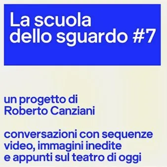

da mar 6 ott a lun 3 mag · dalle 18:00
La scuola dello sguardo #7
conversazioni con sequenze video, immagini inedite e appunti sul teatro di oggi La scuola dello sguardo si rivolge allo spettatore contemporaneo. In ogni incontro, una rete di visioni e saperi permette di allargare gli sguardi e le conoscenze sulle nuove creazioni dello…
 Indicazioni
Indicazioni
- Costi e prenotazioni
- Costo non indicato · Prenotazione non indicata
- Programma
- Programma da verificare. Apri la fonte ufficiale per orari e possibili aggiornamenti.
- In caso di maltempo
- Nessuna indicazione specifica pubblicata.
- Note
- Acquisito automaticamente dalla fonte.
L’EVENTO
Descrizione completa
A cura di Roberto Canziani
conversazioni con sequenze video, immagini inedite e appunti sul teatro di oggi La scuola dello sguardo si rivolge allo spettatore contemporaneo. In ogni incontro, una rete di visioni e saperi permette di allargare gli sguardi e le conoscenze sulle nuove creazioni dello spettacolo dal vivo. Martedì 6 ottobre 2026 ore 18
Udine, Teatro Palamostre
Tentativi di felicità per chi cammina piano
conversazione su Ivor Martinić e Marcela Serli
con Roberto Canziani
Tre lingue, un autore croato, una regista argentina. La scrittura di Ivor Martinić incontra la regia sudamericana di Marcela Serli . Insieme parlano di felicità, di infelicità, di fragilità. Un lavoro teatrale che apre il cuore. E in questa apertura, diventa mondiale. Giovedì 26 novembre 2026 ore 18
Tra fuoco, morte e passione, rinascita di una storia archetipa
conversazione su Dewey Dell
con Francesca Pedroni
Con il destino ineluttabile dei suoi eroi, Didone ed Enea di Henry Purcell strega dal 1689 registi, coreografi, musicisti. Un viaggio che a partire da alcune delle più frementi riscritture coreografiche dell’opera ci guiderà alla scoperta della nuovissima produzione della compagnia italiana Dewey Dell . Giovedì 3 dicembre 2026 ore 18
Quando il corpo e i suoi gesti raccontano una stagione
conversazione su Stefano Ricci
Congiura è un patto silenzioso, l'alleanza di pensieri e di respiri. I corpi che Stefano Ricci ha scelto per questa creazione sono quelli di cinque donne in età matura. È il più recente approdo di un artista che ha trasformato i modi della regia negli ultimi due decenni. Giovedì 10 dicembre 2026 ore 18
Basta una lettera. Nasce un incontro con gli spettatori
conversazione su Milo Rau
con Graziano Graziani
Ospite quest'anno, per la prima volta, di Teatro Contatto, lo svizzero Milo Rau è il più europeo fra i registi, il più radicale, il più fermo nelle prese di posizione. Folgorante nelle riletture dei personaggi del mito. Altrettanto acuto nell'analisi della realtà che ci circonda. Martedì 9 marzo 2027 ore 18
Inventare una via di salvezza, oltre i limiti
conversazione su Fabiana Iacozzilli
con Andrea Pocosgnich
“La notte le bambole mi parlavano: una suora mi suggerì di ascoltarle e metterle in scena”. Il percorso artistico di Fabiana Iacozzilli prende il via dalla memoria personale. Nella sua recente creazione, intitolata Oltre , la regista trasfigura in testimoni spirituali le vittime di un disastro aeronautico. Lunedì 15 marzo 2027 ore 18
Essere registi adesso. La carica dei trentenni
conversazione su Giovanni Ortoleva
Un riadattamento rigoroso di Mirra di Alfieri. Una vivace riscrittura di La signora delle camelie di Dumas figlio. I più recenti lavori di Giovanni Ortoleva mettono in luce la versatilità di un regista trentenne, che non teme adesso il confronto con il più antico dei tragediografi. Lunedì 3 maggio 2027 ore 18
Udine, Teatro S. Giorgio
Ci sono bombe che scoppiano nel cervello
conversazione su Muta Imago
Quando scelsero quel nome, Muta Imago , figura senza le parole, Claudia Sorace e Riccardo Fazi non immaginavano il percorso che li avrebbe portati, ora, ad appropriarsi del dialogo tra un filosofo e l'aviatore che, il 6 agosto 1945, cambiò la storia del pianeta.
Tutti gli incontri sono a ingresso libero
IL PROGRAMMA
Programma e orari
Appuntamenti raccolti dalle fonti elencate. Dove manca un orario, non è ancora disponibile in questa scheda.
Programma pubblicato
- Dal 2026-10-06 al 2027-05-03
INFORMAZIONI UTILI
Prima di partire
- Controllare la fonte prima di partire.
ORGANIZZAZIONE